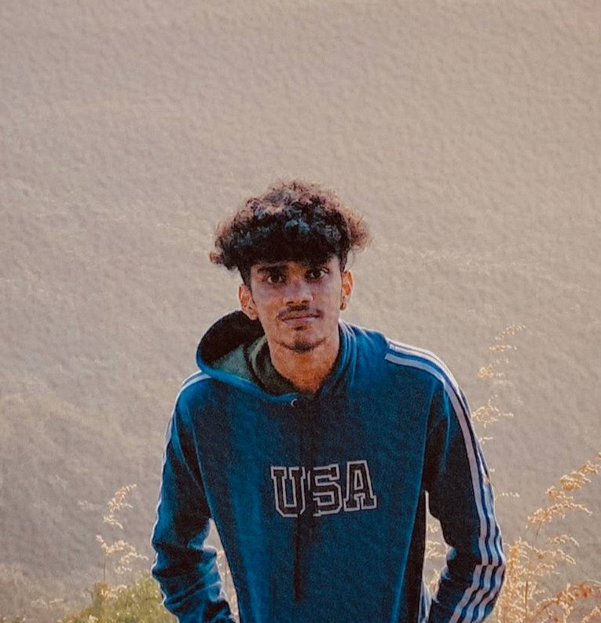

Nidhin TV

Summary
Aspiring front-end web developer with a passion for creating responsive, user-friendly websites. Eager to apply coding skills and design knowledge to deliver engaging digital experiences.
Education
- Plus Two (Commerce)
- BEM HSS Parappanangadi
- Parappanangadi, Kerala
- 2021 – 2022
Work Experience
- (No formal work experience yet. Actively seeking opportunities to apply skills and gain experience in front-end web development, video editing, and photo editing.)
Skills
- Video Editing: Proficient in CapCut for creating dynamic and engaging videos with effects, transitions, and sound design.
- Photo Editing: Skilled in Adobe Lightroom for professional photo enhancement and editing.
Other
Hobbies
Contact